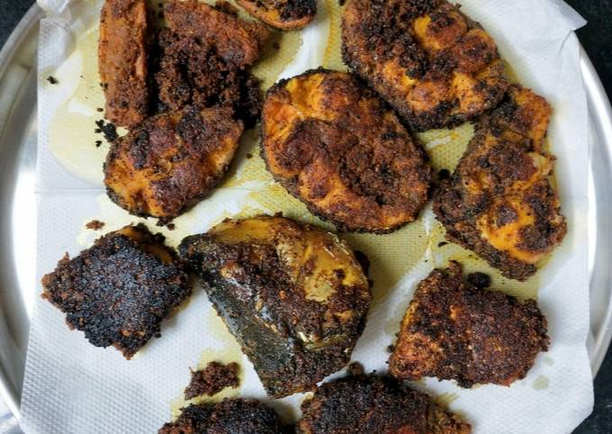

Indian Fish Fry

"When we were kids, whenever my parents went out to an adults only party,
my mother used to ask us what we wanted for dinner at home. 99% of the time,
our choice was pooris and shahi paneer. My mother was always nice enough to oblige.
Here is the recipe. It is quite rich and hence a nice treat."
Ingredients
- 2 tablespoons cooking oil
- 1 large onion, thinly sliced
- 4 cloves garlic, minced
- 1 teaspoon ground cumin
- 1 teaspoon ground coriander
- ½ teaspoon ground turmeric
- ½ teaspoon Kashmiri red chili powder
- 4 tomatoes, pureed
- ½ pound paneer, cubed
- ¼ cup water
- 1 teaspoon white sugar
- salt to taste
- ¼ cup cream
- 2 tablespoons chopped fresh cilantro
Recipe instructions
- Pour the pureed tomatoes into the skillet
- cook until the excess liquid evaporates and the oil separates, 3-5 minutes.
- Add the paneer, water, sugar, and salt to the mixture
- stir gently so the paneer does not break apart.
- Cook until the paneer begins to absorb some of the liquid, about 10 minutes.
- Stir the cream into the mixture and simmer another 5 minutes.
- Garnish with cilantro to serve.
Return to top
Return to main page